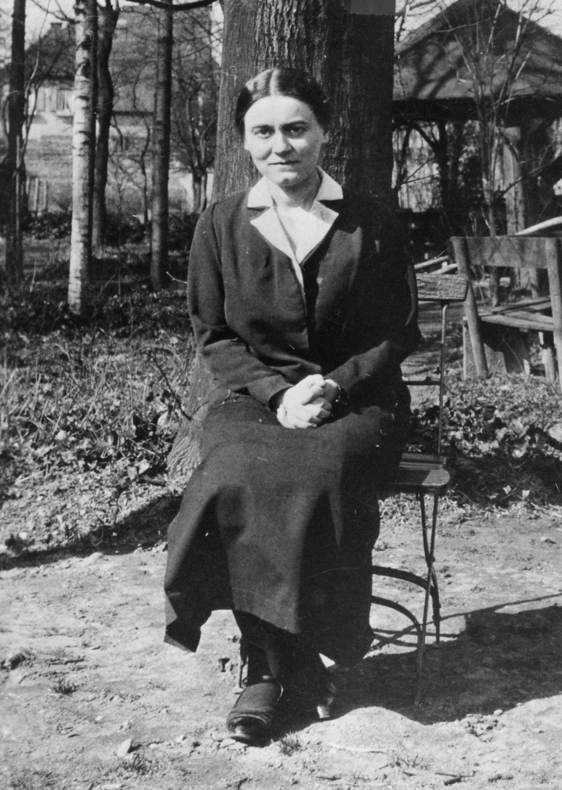

„Hoće li tko za mnom, neka se odreče samoga sebe, neka uzme svoj križ i neka ide za mnom.” (Mt 16,24)

Edith Stein, rođena 1891. u židovskoj obitelji, bila je briljantna intelektualka i jedna od prvih žena koja je doktorirala filozofiju u Njemačkoj. Kao asistentica slavnog Edmunda Husserla, istaknula se u fenomelogiji, no njezin je nutarnji put vodio od mladenačkog ateizma prema dubokom traženju istine. Ključni trenutak njezina obraćenja dogodio se 1921. godine nakon čitanja autobiografije svete Terezije Avilske, što ju je potaknulo da se krsti u Katoličkoj Crkvi i započne život posvećen spajanju znanosti i vjere.
Nakon godina poučavanja i pisanja značajnih filozofskih djela, Edith je 1934. ostvarila svoj san i ušla u red bosonogih karmelićanki u Kölnu, uzevši ime Terezija Benedikta od Križa. Zbog uspona nacizma i progona Židova, bila je prisiljena napustiti profesorsku službu i skloniti se u samostan u Nizozemskoj. Unatoč opasnosti, svoj je poziv shvatila kao dobrovoljno sudjelovanje u Kristovoj patnji, prikazujući svoj život kao žrtvu za mir i svoj narod.
Tragičan kraj doživjela je u kolovozu 1942. godine kada ju je, zajedno sa sestrom Rozom, uhitio Gestapo kao odgovor na protest nizozemskih biskupa protiv nacizma. Odvedena je u koncentracijski logor Auschwitz, gdje je ubijena u plinskoj komori, ostavivši svjedočanstvo neustrašive vjere i ljubavi prema bližnjima čak i u najtežim trenucima. Papa Ivan Pavao II. proglasio ju je svetom 1998. godine, a danas se štuje kao jedna od suzaštitnica Europe i simbol pomirenja.